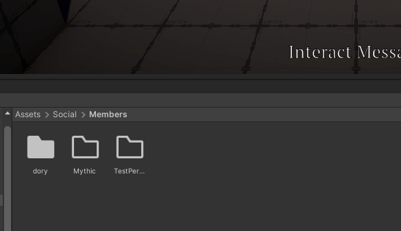

Documentation
File Storage
- This page will teach you the basics and rules for file storage for the Open Source Project.
Why Do We Worry About File Storage
Storage is important to the project as we want to keep the file size down for github. Let's say you only use 500 mb's for your project folder. Now multiply that by the number of people working on the project. That is quite a lot. Currently we don't have funding so we are capped at Git's 2GB storage size. In order for us to maintain a low storage size, we make members have a capped folder size of 100Mb's. You will store all of your own personal assets in this folder.
If you need a bit more storage than the base 100Mb's, then you can request a higher count, please contact an officer.
You can create your own folder under Assets/Social/Members. Please make sure to use an appropriate name here.
Tips To Maintain A Low Storage Size
1) We highly recommend to compress your file sizes before importing to the project.
2) Cut on Asset Copies. Try to reuse assets as much as possible. A good example is materials. A base material size is 4KB. Having lots of materials will hurt you. Instead check out the Material Instnacer to Instancer your materials.